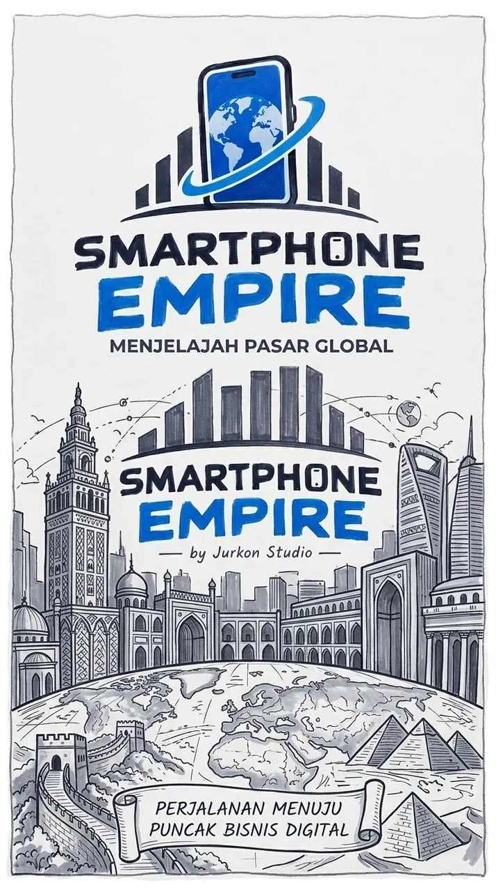

Static page · web.html
Smartphone Empire: Landing Page
The game’s intro page, with light and dark themes, two languages, and account and Silicon balance info.
Static HTMLID / ENDark mode

2Languages (id/en)
2Themes (light/dark)
0Theme flash on load
1Static file
Problem
New players need a clear entry point before stepping into a complex game.
Solution
web.html is a static page that explains the game, remembers each visitor’s theme and language before the page paints, and points to the game.
Key features
- Theme and language remembered with no flash
- Social previews (Open Graph)
- Account and Silicon balance info
- Direct links to the game and Android